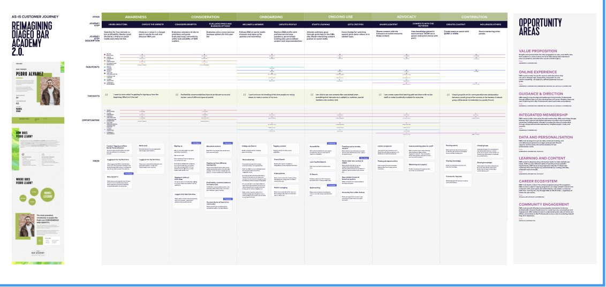

The Challenge
Diageo's flagship D2C platforms suffered checkout friction on a headless Shopify architecture, causing drop-offs and capping digital revenue.
The Approach
- Data-led analysis. Pinpointed friction zones using Quantum Metric session replays and behavioural analytics.
- Headless optimisation. Streamlined checkout pathways with high-impact, rapidly-deployed feature releases.
- Omnichannel synergy. Aligned digital merchandising with physical Guinness Storehouse booking flows.
- System scaling. Deployed brand-consistent templates from the central design system at pace.
The Impact
- Revenue uplift. Drove an estimated 10–15% increase in conversion across transaction paths.
- Frictionless funnel. Drastically reduced cart abandonment with an intuitive checkout experience.
- Team velocity. Standardised a data-backed optimisation model that let small teams test independently.
